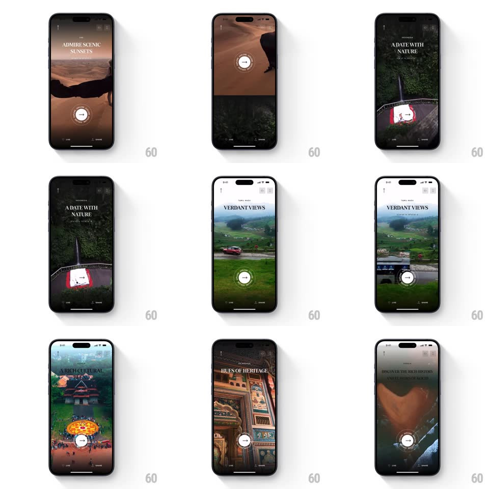

Media
Frame-by-frame

Rebuild this interaction 1:1: CRED's travel story carousel - full-screen destination videos ("Admire Scenic Sunsets", "A Date With Nature", "Verdant Views", "Hues of Heritage") crossfade as you swipe, each page's serif headline and destination tag staggering in, while a circular button with a spinning text ring sits at the bottom center.

Rebuild this interaction 1:1: CRED's travel story carousel - full-screen destination videos ("Admire Scenic Sunsets", "A Date With Nature", "Verdant Views", "Hues of Heritage") crossfade as you swipe, each page's serif headline and destination tag staggering in, while a circular button with a spinning text ring sits at the bottom center.
## Integration
Integration: stack-agnostic spec - springs given as stiffness/damping, timed motions as duration + curve; map every value to your framework and animation library of choice.
## Scene
Full-bleed video pages: a destination tag at top ("GOA", "MEGHALAYA", "TAMIL NADU", "RAJASTHAN"), a large serif all-caps headline, and a bottom row with a circular button (arrow glyph inside, rotating text ring around it) between Like and Share icons.
## Motion spec
Pattern: paged video stories with staggered text and a rotating badge.
- Swipe: the current video crossfades to the next (500ms) with a slight outgoing scale-up (1 -> 1.05); the incoming video starts scaled 1.05 and settles to 1.
- Text per page: the destination tag fades in (250ms), then the headline lines rise (~24px) and fade in staggered (150ms apart, 350ms).
- The circular button's text ring rotates continuously (~8s/rev); the center arrow holds still.
- Swipes are 1:1 during the drag - the crossfade tracks finger position.
## Calibration
- Videos are moody and cinematic; text is white serif over a subtle bottom gradient.
- Only the outgoing page scales - incoming settles, so motion never fights itself.
## Reduced motion
Pages crossfade (300ms); text appears complete; the button ring stops rotating.
## Don't miss
- The spinning text ring on the button is ambient - it never stops, even mid-swipe.
- Like and Share are static icons; the center button carries all the motion.